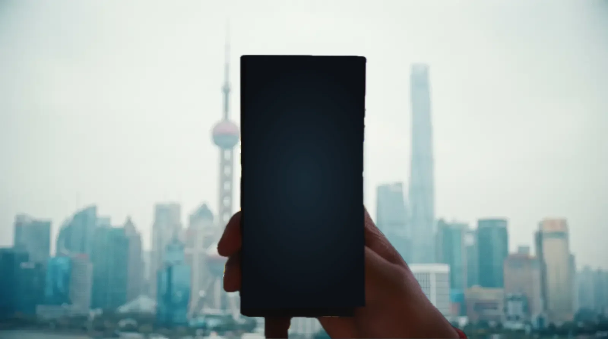
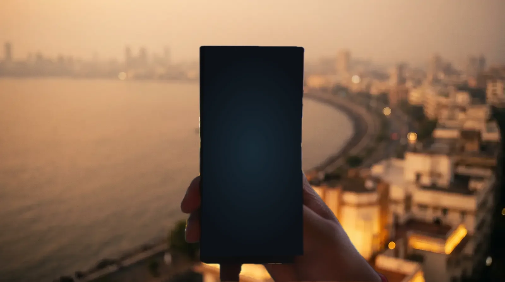
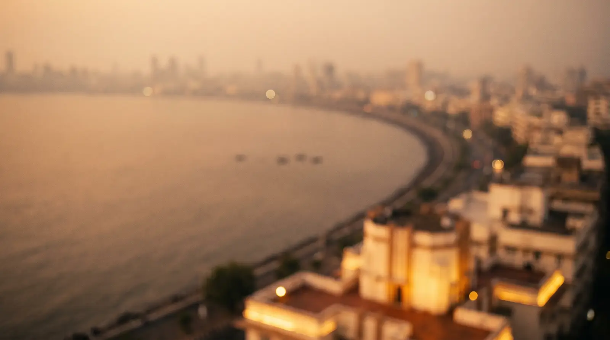
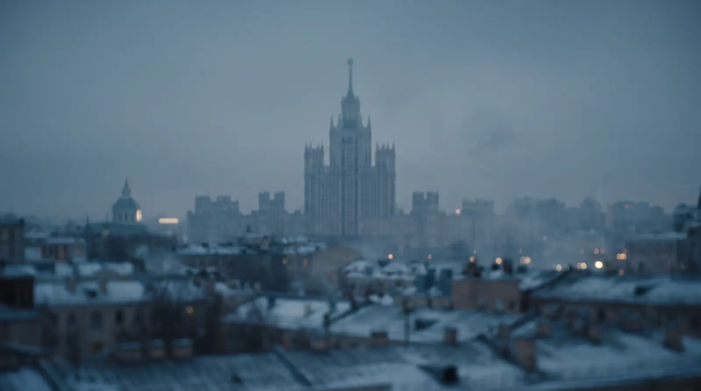
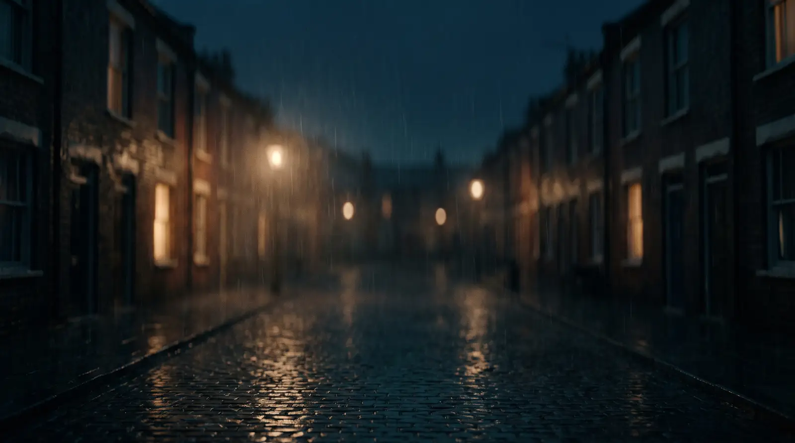
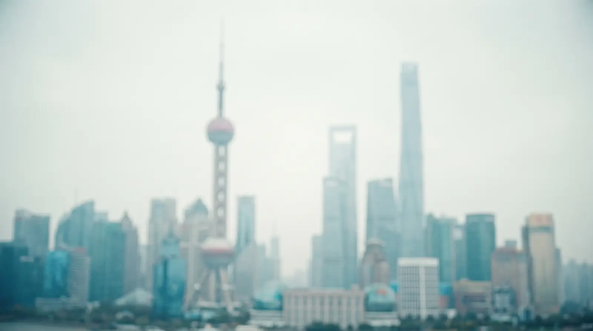
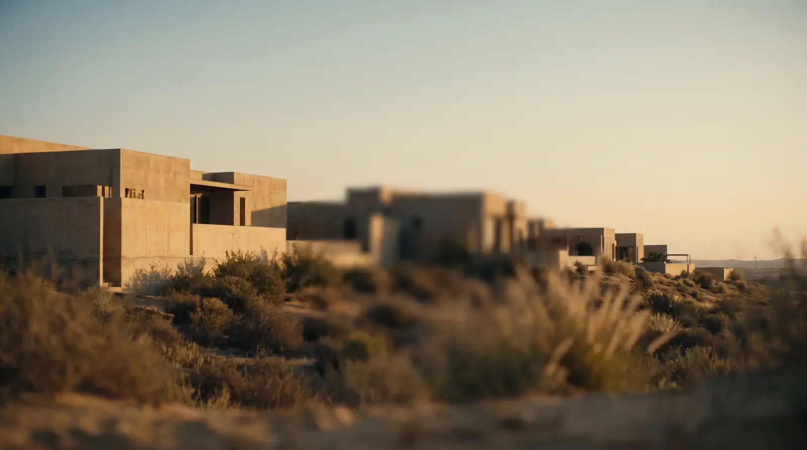
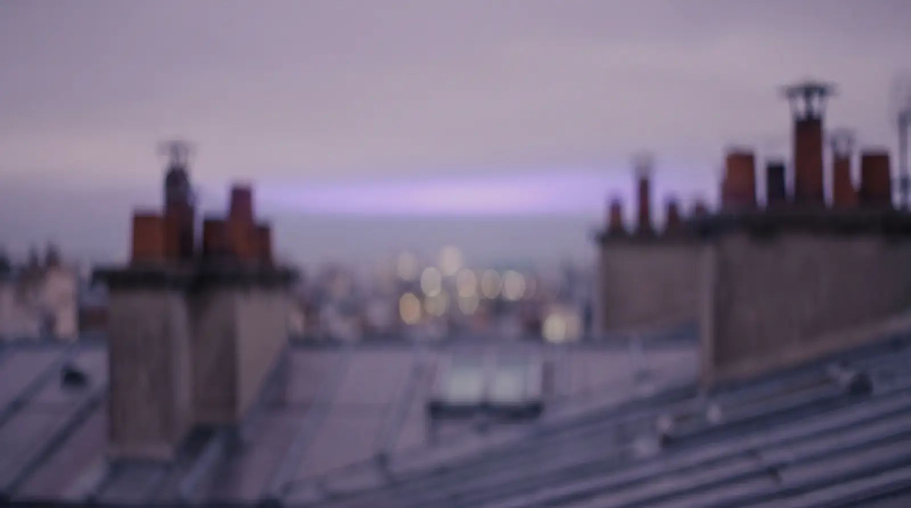

Keyframe review — v0.7 retouch pass
Left = original · right = retouched. Derived frames shown solo. Originals preserved in stills/orig/.
KF-03 · boardroom — screen dissolved, presenter face softened
re-roll (camera square to screen) still recommended — this retouch is the stopgap
KF-04 · street broker — dusk → golden hour, signage dissolved
now matches Act II's amber/teal continuity lock
KF-05 · phone macro — reflected face removed, glow brightened
screen repainted: dark gradient + cyan glow · notch preserved · chat overlay lands here
KF-02 · window portal — REAL 1280×720 (owner-generated)
needed from owner: the 1280×720 original (drop into stills/ as KF2.webp) — this is Transit B's conditioning frame
KF-03D · derived — dusk boardroom, green-cyan screen (Transit D start)
the live world-map DOM overlay renders over this screen
KF-07 · derived draft — night facade, one lit window (style ref)
derived from the REAL KF-02 · style ref for Transit D
KF-08 · derived — finale sky (engine's night grade, pre-baked)
upper-center clean for orb + wordmark + CTAs · loops back into KF-01
Hand plate v2 · Apple Vision subject-lift matte (montage foreground)


re-matted after owner rejected v1 ("very very bad") — Vision subject-lift, screen flattened, wrist flush to frame bottom, per-city tint in engine. Left = worst case (bright Shanghai), right = Mumbai
Montage city plates · ALL SIX GENERATED — live in the film


Mumbai 09:41 · Moscow 07:11


London 05:11 (rainy variant; cars variant banked in plates/alts/) · Shanghai 12:11


Riyadh 07:11 · Paris 06:11 (soft variant banked in plates/alts/)